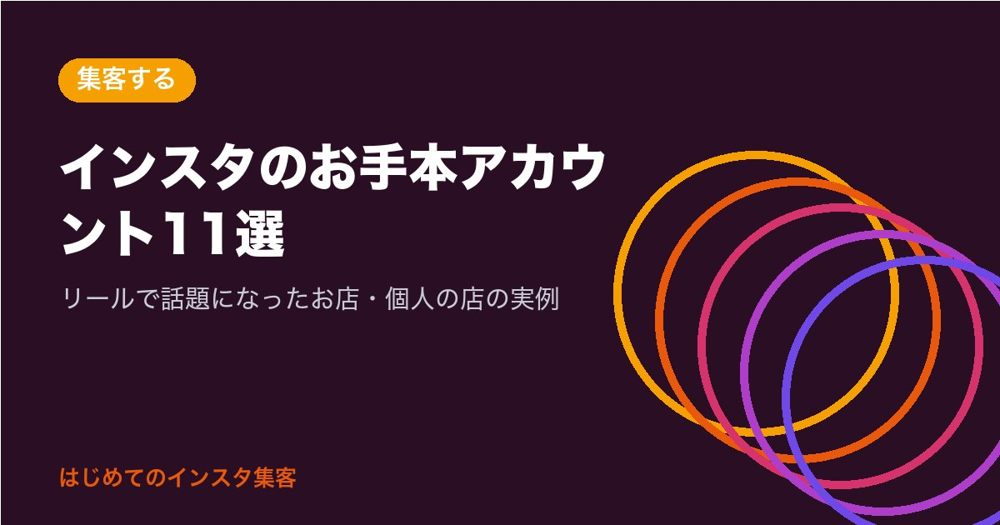

インスタのお手本アカウント11選｜リールで話題になったお店・個人の店の実例

10のステップを読んでも、「実際にうまくいっているお店は、どんなアカウントなんだろう？」と、ゴールの形が見えにくくありませんか？
結論から言うと、お手本になるアカウントは、有名な人ばかりではありません。小さなお店や、ひとりで始めた人のアカウントも、リールやプロフィールの工夫で、たくさんの人に届いています。
この記事は、10のステップの番外編です。ニュースや公式の発表で紹介された、実在するアカウントを紹介します。
確認日：2026年11月13日（アカウントがあること、公開されていること、フォロワーの数は、この日に Instagram で確かめました。数字は毎日変わります）
この記事でわかること
- リールで話題になった、小さなお店の実例
- プロフィールや世界観（アカウント全体の雰囲気）がお手本のお店
- お手本から「まねしていいこと」と「まねしてはいけないこと」
お手本を見る前に、見るポイントは3つ
お手本のアカウントを開いたら、次の3つだけ見てみてください。
全部を一度に見ようとしなくて大丈夫です。
- プロフィール：名前と自己紹介を読んで、「何のお店か」がすぐ分かるか
- 投稿の並び：写真や動画の雰囲気が、そろっているか
- リール：最初の1秒で、何の動画か分かるか
この3つは、STEP 2 プロフィールの書き方、STEP 4 投稿の種類、STEP 7 リールの作り方とつながっています。
つまり、お手本を見ることは、10のステップの「答え合わせ」にもなります。
なお、ここで紹介するのは、ニュースや公式の発表で取り上げられたアカウントだけです。
写真や文章は転載せず、アカウントへのリンクと、記事に書かれていたことだけを紹介します。
リールで話題になった、小さなお店
まずは、リール（縦長の短い動画）で多くの人に届いたお店です。
どのお店も、きれいに作りこんだ動画ではなく、お店の毎日の中の一場面が話題になっています。
たしま屋（鹿児島・出水市の焼き肉店）
- アカウント：@tashimaya.izumi（フォロワー約5,300人）
- 話題になったこと：テイクアウトで貸したお重が返ってきた時、中にお客さんからのドーナツと手紙が入っていた、という動画。記事の時点で85万回以上再生されました。
- まねしたいところ：料理の腕前ではなく、お客さんとの、ちょっといい話を見せていること。どのお店にもある場面です。
- 出典：ねとらぼ（2026年10月27日）
自家製天然酵母 Pan-Pao（東京・昭島市のパン屋）
- アカウント：@pan_pao.2012（フォロワー約340人）
- 話題になったこと：オーブンから、炭のようになったバゲットが出てきた動画。150万回以上再生されました。失敗を「やっちまった」シリーズとして投稿しています。
- まねしたいところ：フォロワーが少なくても、動画は多くの人に届くこと。失敗も、見る人には親しみやすい話になります。
- 出典：ねとらぼ（2026年2月3日）
喫茶すず（大阪・東大阪市の喫茶店）
- アカウント：@kissa_suzu123（フォロワー約4,800人）
- 話題になったこと：8年閉まっていたおばあさんの喫茶店を、21歳のお孫さんが2026年2月に再開。その様子の動画は71万回再生、いいねは1.6万件を超えました。
- まねしたいところ：お店を始めた理由や想いを、そのまま伝えていること。投稿の数がまだ少なくても届いています。
- 出典：ねとらぼ（2026年6月14日）
FJP（栃木・幼なじみ10人で始めた農業）
- アカウント：@fjp_fujioka（フォロワー約3.5万人）
- 話題になったこと：「農業は儲からない」と言われても続ける理由を、自分たちの言葉で語った動画。約4万回再生されました。
- まねしたいところ：なぜこの仕事をしているのかを、短い動画で話していること。
- 出典：ねとらぼ（2025年4月27日）
つまり、リールで届くのは「すごい映像」より、人の気持ちが動く、毎日の一場面です。
プロフィールと世界観がお手本のお店
次は、プロフィールや投稿の並びを見るだけで、「どんなお店か」が伝わるアカウントです。
Suu-（福岡のネイルサロン）
- アカウント：@nail_suu_（フォロワー約3.1万人）
- 記事で紹介されていたこと：ネイルのデザインの写真を毎日、自然の光で撮って投稿。すべての投稿を、同じ雰囲気のデザインにそろえています。新しい予約の多くが Instagram からだそうです。
- まねしたいところ：名前の欄に「福岡ネイル」「薬院駅徒歩3分」など、探す人が使う言葉が入っていること。STEP 2 の「名前の欄に検索される言葉を入れる」のお手本です。
- 出典：リラクジョブ（2023年10月3日）
ネイルの小部屋カタンコトン（東京・世田谷のネイルサロン）
- アカウント：@katankotonnail（フォロワー約1.3万人）
- 記事で紹介されていたこと：はじめは作品の写真だけを載せていて、来店につながらなかったそうです。お店のコンセプトや想いを、言葉でも伝えるように変えると来店が増え、開店から約半年で軌道に乗りました。
- まねしたいところ：写真だけでなく、言葉でも伝えること。うまくいかない時に、やり方を変えたこと。
- 出典：リラクジョブ（2021年7月19日）
Minimal - Bean to Bar Chocolate -（チョコレート専門店）
- アカウント：@minimal_beantobarchocolate（フォロワー約8.6万人）
- 紹介されていたこと：Instagram が東京都の後援で開いた催し「INSTA MIKKE TOKYO」で、紹介された中小のお店14社のひとつです。
- まねしたいところ：投稿の並びを見た時の、色や雰囲気のそろい方。STEP 4 のフィード投稿（プロフィールに残る投稿）の見せ方の参考になります。
- 出典：Meta 公式ニュースルーム（2021年6月21日）
予約や来店につなげているお店
インスタで知ってもらったあと、実際に来てもらうところまでつなげている例です。
福井のすごい若旦那（福井・あわら温泉の旅館）
- アカウント：@sugoi_wakadanna（フォロワー約3.5万人）
- 記事で紹介されていたこと：旅館の魅力をまじめに伝える動画は、あまり見られなかったそうです。話題の動画の「型」を使った、楽しい動画に変えてから広く届くようになりました。SNS 全体のフォロワーは約12万人、客室の稼働率（部屋が埋まっている割合）は1年で86%と紹介されています。
- まねしたいところ：伸びなかった時に、やり方を変えて試したこと。STEP 9 の「数字を見て、少しずつ直す」の実例です。
- 出典：東洋経済オンライン（Yahoo!ニュース、2026年11月13日）
FOOD STAND magali Kamakura（神奈川・鎌倉のカフェ）
- アカウント：@fsmagali（フォロワー約6,000人）
- 紹介されていたこと：Meta（Instagram の会社）の公式セミナーで、飲食店の予約の機能とリールの使い方の事例として紹介されました。
- まねしたいところ：プロフィールから予約までの道を用意していること。STEP 3 のプロアカウントの機能と、STEP 10 の「つなげる」の参考になります。
- 出典：Meta 公式ニュースルーム（2022年7月6日）
写っている人を大切にしているお店
お店で働く人や、お客さん、仲間を大切に見せているアカウントです。
藤屋わさび農園（長野・安曇野の農家）
- アカウント：@wasabi_azumino（フォロワー約2.2万人）
- 紹介されていたこと：写真に写っている人をタグ付けして、交流を生んでいる例として紹介されました。
- まねしたいところ：STEP 5 の「タグ付け」を、つながりを広げる道具として使っていること。タグ付けは、写っている人に許可をもらってからにすると安心です。
- 出典：SMART AGRI（2023年4月18日）
太陽ファームグループ（愛媛の農家）
- アカウント：@taiyofarm（フォロワー約1.7万人）
- 紹介されていたこと：若い従業員さんが登場するリールで、働く人の雰囲気を伝えています。人を採用する時にも役立っている例として紹介されました。
- まねしたいところ：お店の「中の人」が見えると、お客さんは安心しやすいこと。
- 出典：SMART AGRI（2023年4月18日）
お手本の「まねしていいこと」と「まねしてはいけないこと」
お手本を見たら、自分のお店でも試したくなりますよね。
まねしていいのはやり方（型）で、まねしてはいけないのはその人が作ったものです。
| まねしていいこと（型） | まねしてはいけないこと |
|---|---|
| お店の毎日の一場面を動画にする | 人の写真や動画を、そのまま使う |
| 失敗談をシリーズにする | 人の文章を、そのまま写す |
| 名前の欄に、探される言葉を入れる | お店の名前やロゴを、似せる |
| 写真の色や雰囲気をそろえる | 人の動画に、自分の音声だけを重ねる |
つまり、「どう見せているか」をまねて、中身は自分のお店のものにすれば大丈夫です。
人の写真や動画をそのまま使うと、著作権の問題になるうえ、STEP 7 で紹介したとおり、おすすめにも出にくくなります。
よくある質問
Q. お手本のアカウントをフォローしてもいいですか？
もちろん大丈夫です。
フォローしておくと、新しい投稿が届くので、「最近はこんな投稿をしているんだ」と自然に学べます。
Q. フォロワーが何万人もいないと、集客できませんか？
そんなことはありません。
Pan-Pao さんのフォロワーは約340人ですが、動画は150万回以上見られました。
フォロワーの数より、届けたい人に届いているかのほうが大切です。
Q. お手本と同じくらいになるには、どれくらいかかりますか？
お店によって違うので、決まった期間はありません。
ここで紹介したお店も、うまくいかない時期に、やり方を変えて試しています。
STEP 10 の「はじめての1か月の進め方」から、ひとつずつ進めてみてください。
Q. お金はかかりますか？
お手本のアカウントを見るのも、まねして投稿するのも、無料です。
お金がかかるのは、広告（お金を払って投稿を多くの人に届ける宣伝）を出す時だけです。
まとめ
お手本のアカウントについて、もう一度まとめます。
- 小さなお店や、ひとりで始めた人のアカウントも、リールで多くの人に届いている
- 話題になるのは、すごい映像より、お客さんとのいい話や、失敗談などの「毎日の一場面」
- プロフィールの名前の欄や、投稿の雰囲気のそろえ方は、すぐまねできる
- まねしていいのは「型」。人の写真・動画・文章は使わない
- フォロワーの数より、届けたい人に届いているかが大切
お手本の中に、「これなら自分のお店でもできそう」と思えるものは見つかりましたか？
最後まで読んでくださり、ありがとうございました。
まずは、この記事のステップを1つだけ、今日のうちにやってみませんか。5分でできることから始めると、次のステップが楽になります。
あなたのインスタで、いちばん届けたい相手はどんな人ですか？
この記事は下書きにAIを使い、内容は運営者が公式情報で確認しています。